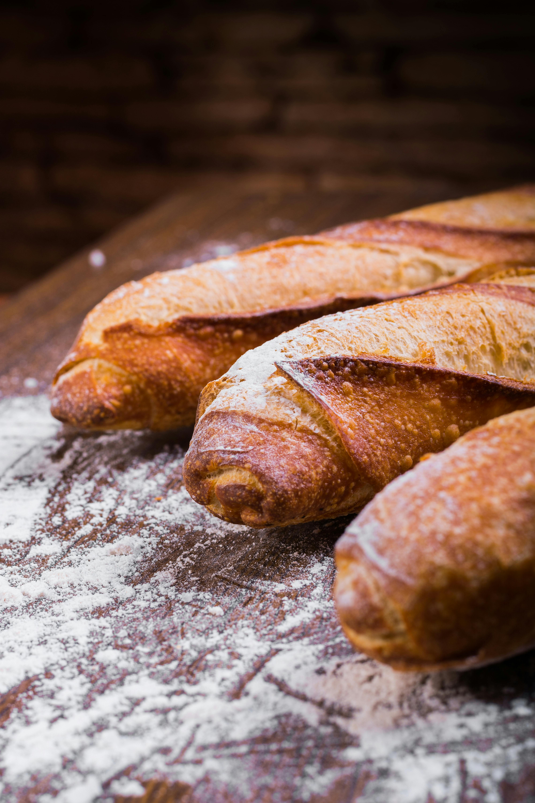

Nossos Produtos e Ambiente



Sobre Nós
A Padaria Doce Pão nasceu em 1995 com a missão de trazer pães fresquinhos todos os dias para a nossa comunidade.
Começamos com um pequeno forno e muito amor pelo que fazemos. Hoje somos referência em qualidade e atendimento na cidade.
Cardápio Completo
ü•ñ Pão Franc√™s
Crocante por fora e macio por dentro.
| Categoria | Produto | Descrição | Preço |
|---|---|---|---|
| üçû Pães | üçû Pão de Forma | Pão fofinho integral ideal para sandu√≠ches | R$ 14,00/und |
| ü•ê Croissant | Folhado crocante feito com manteiga de primeira qualidade | R$ 6,50/un | |
| üåæ Pão S√≠rio | Pão árabe tradicional, perfeito para lanches saudáveis | R$ 3,50/un | |
| üç∞ Doces | üç´ Bolo de Chocolate | Bolo macio com cobertura de chocolate meio amargo | R$ 38,00/kg |
| üçì Torta de Morango | Massa amanteigada com creme e morangos frescos | R$ 45,00/kg | |
| ü•ß Quindim | Doce tradicional brasileiro feito com coco fresco | R$ 5,00/un | |
| ü•Æ Salgados | üçó Coxinha | Massa crocante com recheio de frango desfiado | R$ 6,00/un |
| üßÄ Pastel de Queijo | Massa folhada com queijo derretido | R$ 5,50/un | |
| ü•ü Esfirra | Massa árabe com recheio de carne temperada | R$ 5,00/un | |
| ☕ Bebidas | ü•§ Suco Natural | Suco feito na hora (laranja, abacaxi ou maracujá) | R$ 8,00/copo |
Diferenciais
- ü•¨ Ingredientes frescos diários
- üìú Receitas tradicionais
- ü§ù Atendimento personalizado
Horário de Funcionamento
| Dia da Semana | Horário |
|---|---|
| Segunda a Sexta | 06:00 - 22:00 |
| Sábado | 06:00 - 18:00 |
| Domingos e feriados | 08:00 - 12:00 |